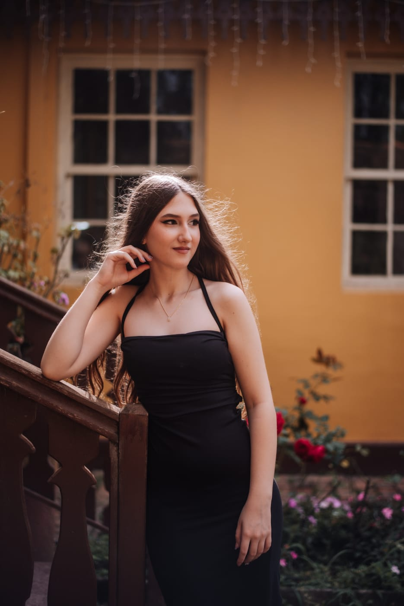

Histórias que
merecem ser eternas.
Mais do que fotografias, criamos memórias. Capturamos a beleza dos detalhes e a verdade de cada instante.
O extraordinário vive
nos pequenos detalhes.
Acreditamos que cada imagem tem uma alma. Nosso olhar busca a luz perfeita, os gestos espontâneos e os sentimentos que palavras não conseguem traduzir.
Um olhar sobre
o que importa.

Um olhar atento,
uma paixão sem limites.
Olá! Sou Mariane, fotógrafa apaixonada por registrar momentos verdadeiros. Meu objetivo é criar imagens delicadas, naturais e cheias de emoção.
Trabalho com sensibilidade, criatividade e atenção aos detalhes. Acredito que uma boa fotografia não mostra apenas o que vemos, mas também aquilo que sentimos.
Cada ensaio é uma nova história. Meu objetivo é conhecer você, entender suas ideias e criar fotografias que tenham significado e permaneçam especiais por muitos anos.
VAMOS CONTAR SUA HISTÓRIA ↗Uma fotografia é o instante em que
o tempo decide ficar para sempre.
Sua história merece
um olhar especial.
Vamos conversar sobre sua ideia, seu evento ou aquele momento que você deseja guardar para sempre.
SOLICITAR ORÇAMENTO ↗